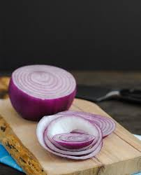
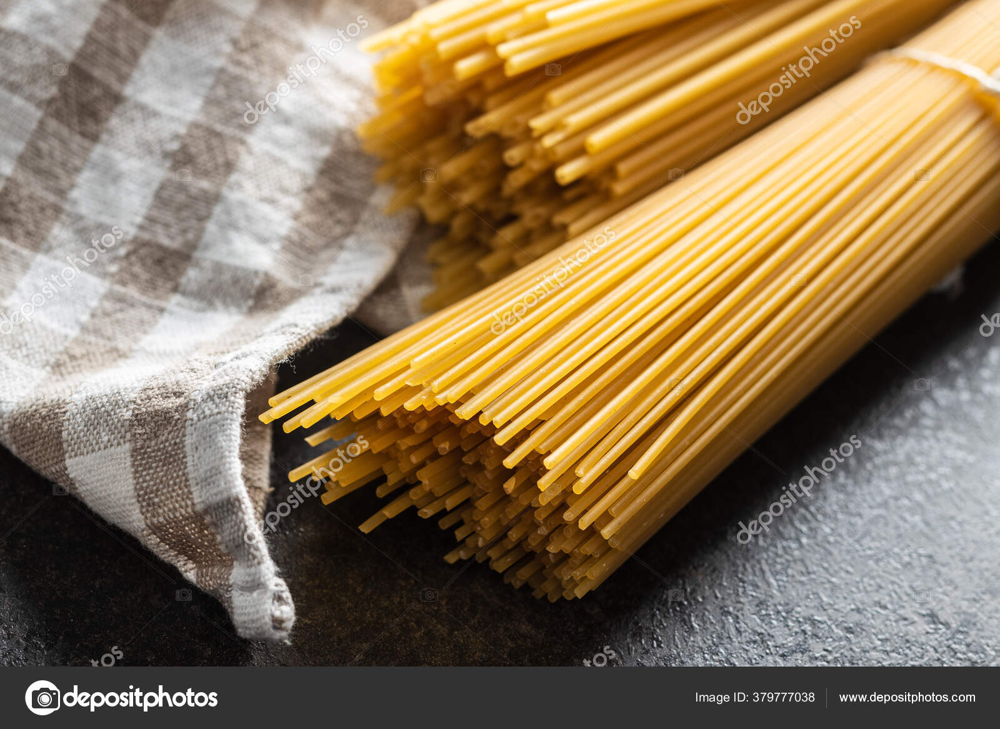
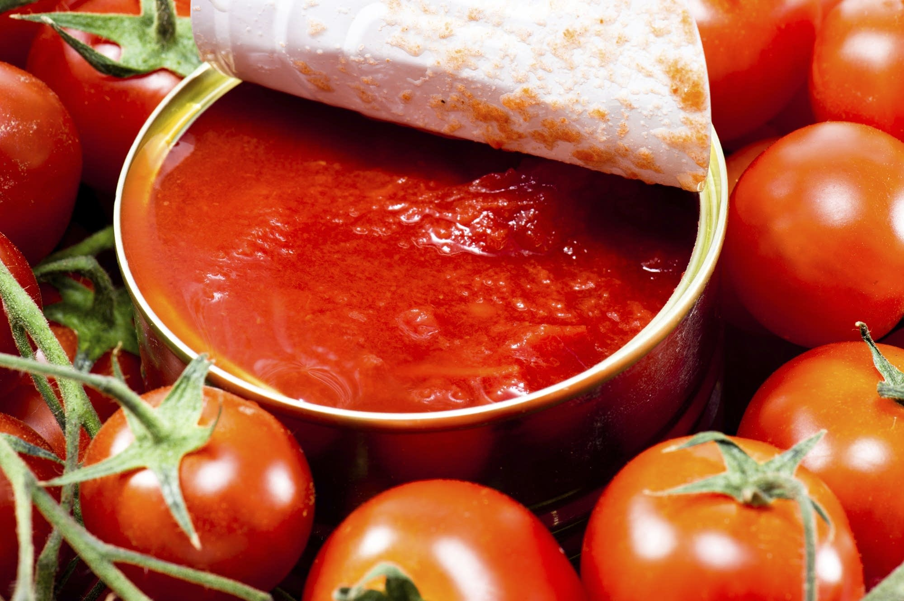

Pasta, a traditionally Italian meal, is an easy to cook and pleasing to eat and in no time, with the instructions we provide you, you are going to a master at making it. Whether you are a seasoned chef or just grabbing a pan for the first time, our instructions will guid you seemlesly to making a pasta that will make the ladies jelous. Let's Go!
If you don't have any of the following, don't worry, Alaba spices got you covered. Order them and they will deliver in no time.
Now let's cook this pasta like it has never been cooked before. make sure you follow the procedures carefully. If you find yout self struggling to follow, you can watch the short videos for every steps